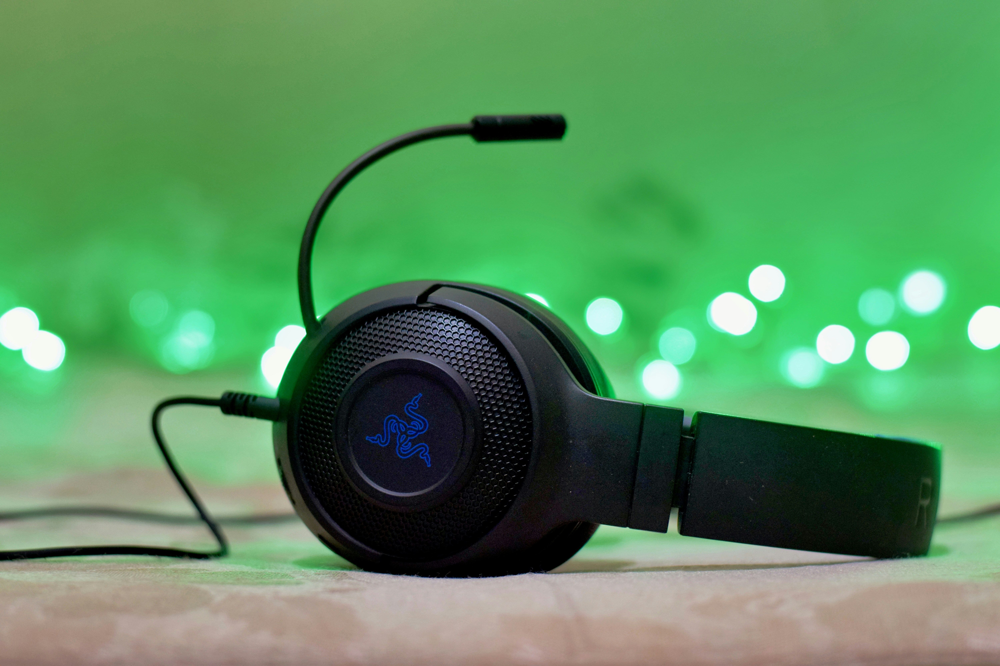
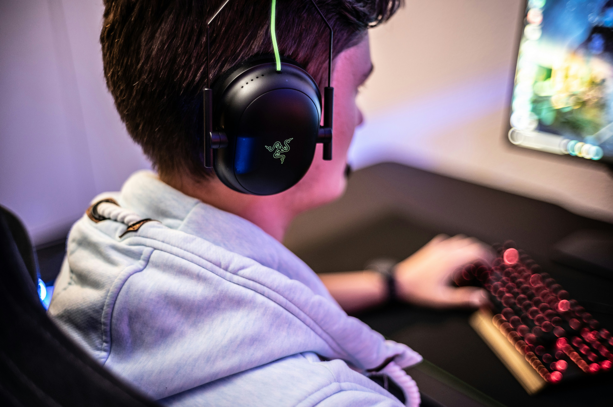
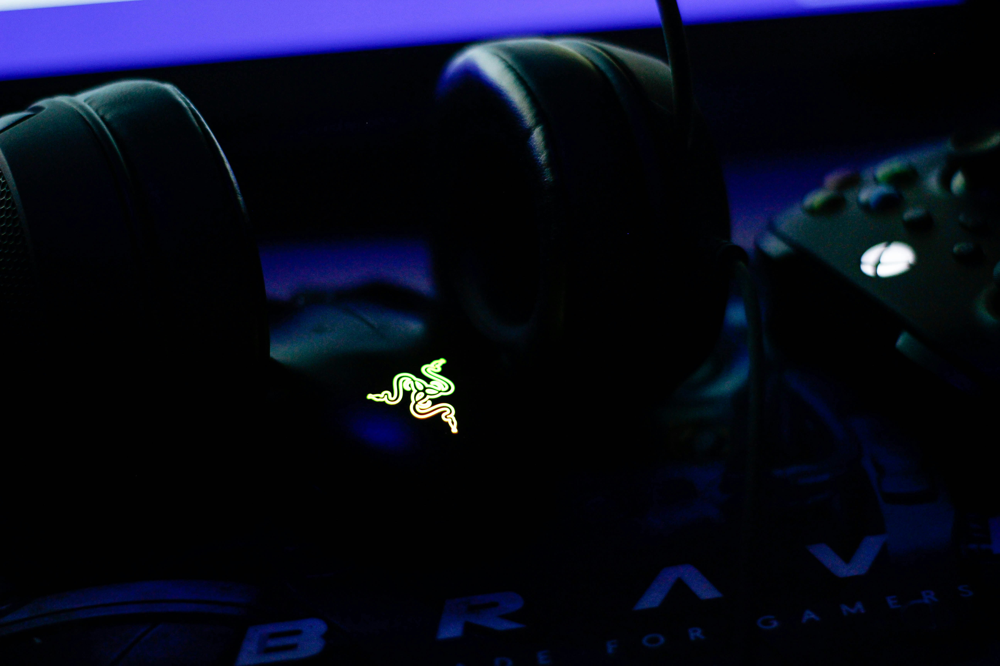

Immerse yourself in every game with the Razer Gaming Headset. Designed for comfort during long gaming sessions, it delivers clear audio, powerful bass, and crisp microphone quality for seamless communication with teammates. Its lightweight design and cushioned ear cups provide a comfortable fit for hours of gameplay.
Buy Now| Product | Razer Kraken Gaming Headset |
| Brand | Razer |
| Model | Kraken X |
| Colour | Black |
| Connectivity | 3.5 mm Audio Jack |
| Microphone | Cardioid Boom Microphone |
| Speaker Size | 40 mm Drivers |
| Frequency Response | 12 Hz – 28 kHz |
| Weight | 250 g |
| Compatibility | PC, PS4, PS5, Xbox One, Xbox Series X/S, Nintendo Switch, Mobile |
| Barcode | 8886419378083 |
| Warranty | 24 Months |
| Stock Status | In Stock |